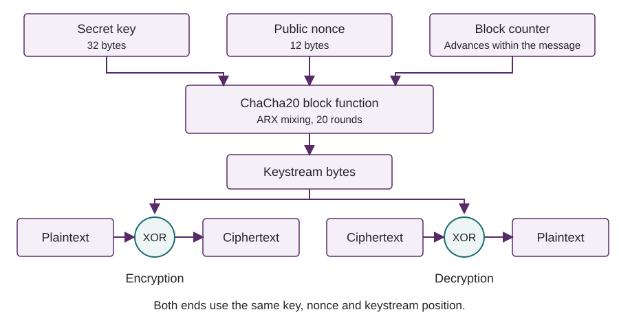
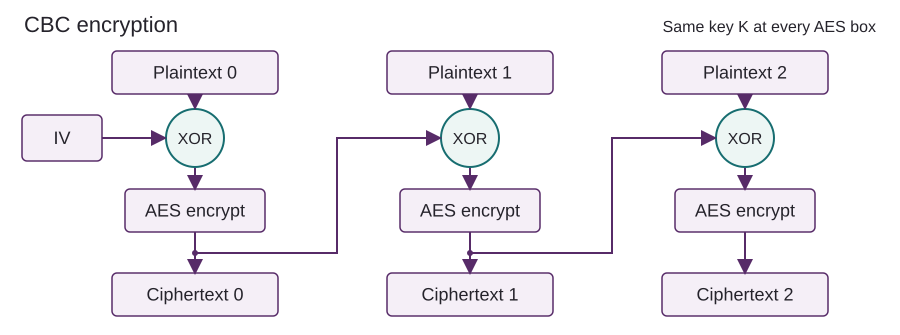

Requirements
- PyCharm through AppsAnywhere, with Python 3.10 or later.
- The Week 2 practice files, extracted into your project.
- PyCryptodome, installed as
pycryptodomein your project interpreter. It is imported asCrypto. The suppliedrequirements.txtlists the dependency. - Week 1 skills: loops, conditions, bytes, hexadecimal, and reading and writing files.
Keep the scripts in the same directory as the data folder. Before starting, try from Crypto.Cipher import AES, ChaCha20. If this fails, check that PyCryptodome is installed in the interpreter selected in PyCharm.
Work through Parts 1-4 during the two-hour session. The download contains the code shown below. You will complete the XOR function in Part 1 and use library functions for the remaining algorithms. If you need a reminder of Python byte operations, refer to Week 1, Part 4. Leave the optional CBC file exercise until you have finished the main tasks.
The coursework will also require you to handle bytes, choose cipher parameters and examine recovered data. These exercises provide some of that background, but are not a complete guide to the assessed challenges.
1. Make a one-time pad
In Week 1 you applied the same XOR value to every byte. A one-time pad uses a separate random byte for each message byte.
A one-time pad can provide information-theoretic security: its secrecy does not depend on an attacker having limited computing power. Claude Shannon formalised this property as perfect secrecy in his 1949 paper Communication Theory of Secrecy Systems. Seeing the ciphertext tells an attacker nothing more about the message contents than they knew beforehand, even if they can try every possible key.
This requires a secret pad that is uniformly random, independent of the message, at least as long as the message and never reused. Every possible plaintext of the same length has a corresponding pad that would produce the observed ciphertext. Since these pads are equally likely, trying all of them cannot identify the original message. The ciphertext still reveals the message length, and the pad offers no protection against someone altering it.
For this exercise, write the XOR function yourself and generate the pad with secrets.token_bytes, which uses the operating system's cryptographic random generator.
For each byte position, encryption is ciphertext = message XOR pad. Applying the same pad again recovers the message because x XOR k XOR k = x.
Write the XOR function
Open byte_tools.py. Keep the length check: the function expects one pad byte for each message byte.
def xor_bytes(left, right):
if len(left) != len(right):
raise ValueError("The byte sequences must have equal lengths")
# Replace this line with your XOR loop and return the result as bytes.
raise NotImplementedError("Complete xor_bytes first")The def statement defines a function. Its indented body runs when you call it, and return passes the result back to the caller. The script otp.py imports your function from byte_tools.py, so keep both files in the same directory.
from secrets import token_bytes
from byte_tools import xor_bytes
message = input("Message: ").encode("utf-8")
pad = token_bytes(len(message))
ciphertext = xor_bytes(message, pad)
recovered = xor_bytes(ciphertext, pad)
print("Message bytes:", len(message))
print("Pad bytes:", len(pad))
print("Ciphertext (hex):", ciphertext.hex())
print("Recovered:", recovered.decode("utf-8"))
print("Same bytes:", recovered == message)Exercise: complete and test the pad
- Complete
xor_bytes: XOR each pair of bytes, collect the results and return them asbytes. Remove theNotImplementedErrorline. - Run
otp.pywith a short message. Check that the recovered message matches andSame bytesprintsTrue. Explain why applying the same pad twice recovers the original bytes.
Hint: writing the loop
Start with result = []. Use for i in range(len(left)): and append one XOR result per pass. Place return bytes(result) after the loop.
The message, pad and ciphertext should have the same byte length. The hexadecimal output is twice as long because each byte is written as two hex characters.
The difficulty with a one-time pad is distributing the key. To encrypt a 1 MB file, both parties need 1 MB of shared secret pad, which they must never use again. Stream ciphers avoid this practical problem by generating a long keystream from a short key. Their security is computational: recovering the message without the key should take an infeasible amount of work.
References: Shannon's 1949 paper (PDF, Section 10) and Python's secrets module.
2. ChaCha20
Daniel J. Bernstein introduced ChaCha20 in 2008 as a development of Salsa20. It is a symmetric stream cipher: a key, nonce and block counter determine a keystream, which is XORed with the message. Decryption uses the same keystream. The 20 in its name refers to the number of mixing rounds.
ChaCha20 is designed to run quickly in software, including on processors without dedicated AES hardware. It uses addition, rotation and XOR, and can encrypt messages of any byte length without padding. Unlike a one-time pad, its security depends on the difficulty of predicting the keystream without the key.
ChaCha20 is usually combined with Poly1305 to detect alterations as well as encrypt data. ChaCha20-Poly1305 is used by the WireGuard VPN and is one of the options in TLS 1.3 for protecting HTTPS connections. We will use ChaCha20 on its own first, then add authentication in Part 4.
The version used here takes a 32-byte key and a 12-byte nonce. The nonce is public, but must be different for every message encrypted with the same key. It selects a different keystream; the counter then advances through successive 64-byte blocks of that stream.

How the keystream is made
ChaCha20 works on sixteen 32-bit words. It repeatedly combines them using addition, rotation and XOR (ARX). Addition wraps modulo 232; rotation moves bits around a word without discarding them. A quarter-round mixes four words, and twenty rounds alternate between columns and diagonals of the state. Finally, the initial state is added back and the result is written as 64 keystream bytes.
The 16-word state
| Word positions | Contents |
|---|---|
| 0-3 | Four fixed constants |
| 4-11 | The 256-bit key |
| 12 | The 32-bit block counter |
| 13-15 | The 96-bit nonce |
You do not need to implement these rounds. PyCryptodome handles the internal state and keystream generation.
Encrypt and decrypt a message
Run chacha.py. The nonce length is specified explicitly because PyCryptodome also supports an 8-byte variant.
from secrets import token_bytes
from Crypto.Cipher import ChaCha20
key = token_bytes(32)
nonce = token_bytes(12)
message = b"Room 204 is booked for 10:00."
sender = ChaCha20.new(key=key, nonce=nonce)
ciphertext = sender.encrypt(message)
print("Nonce (hex):", nonce.hex())
print("Ciphertext (hex):", ciphertext.hex())
print("Lengths:", len(message), len(ciphertext))
# Add your decryption and comparisons below.Exercise: decrypt and compare
- Add a receiver using
ChaCha20.new(key=key, nonce=nonce)and itsdecrypt(ciphertext)method. Print the recovered message and check that its bytes matchmessage. - Encrypt the same message again with the original key and nonce, using a fresh cipher object. Then repeat with a new nonce and compare the ciphertexts. What difference does the nonce make? Reusing it here demonstrates the behaviour; a new message must use a new nonce.
Expected observations
Decryption with the matching key and nonce recovers the original message. Repeating the same key, nonce and message produces the same ciphertext; changing the nonce should change it. The nonce selects a different keystream under the same key.
A cipher object keeps its position in the keystream. Calling it again continues from that position, whereas a new object starts at the beginning. This is why the receiver needs a fresh object with the original key and nonce. Do not use that combination to encrypt another message.
We generate random nonces for these short experiments. In a deployed system, nonce values must not repeat under the same key, including after a restart or when several senders share a key. The library does not keep track of this for you.
References: RFC 8439, ChaCha20, PyCryptodome's ChaCha20 API, TLS 1.3 cipher suites and WireGuard's cryptography.
3. AES in CBC mode
AES (Advanced Encryption Standard) is based on Rijndael, the block cipher designed by Joan Daemen and Vincent Rijmen. They submitted it to NIST's public competition in 1998; it was selected in 2000 and standardised as AES in 2001.
AES encrypts 16-byte (128-bit) blocks with a key of 16, 24 or 32 bytes. These key lengths give AES-128, AES-192 and AES-256; the block size remains 128 bits in each case. Internally, the cipher substitutes and rearranges bytes, mixes them and combines them with key material over 10, 12 or 14 rounds, respectively.
You will encounter AES in several forms. AES-GCM provides authenticated encryption in TLS 1.3, while Windows BitLocker uses XTS-AES for drive encryption. GCM and XTS are modes of operation: they specify how to use the AES block cipher for larger amounts of data. In this practical, we use CBC.
CBC (Cipher Block Chaining) XORs each plaintext block with the previous ciphertext block before applying AES. The first block uses an initialisation vector (IV). Encryption of each block therefore depends on what came before it.

AES-CBC needs a fresh, unpredictable 16-byte IV for each encryption under a key. The IV can be stored with the ciphertext because it need not be secret. To decrypt a block, the receiver first applies AES decryption, then XORs the result with the previous ciphertext block. For the first block, it uses the IV instead.
Run aes_cbc.py. It reads six 16-byte records from data/records.bin and encrypts and decrypts them. This file already fills complete blocks, so no padding is needed.
from pathlib import Path
from secrets import token_bytes
from Crypto.Cipher import AES
from Crypto.Util.Padding import pad, unpad
key = token_bytes(16)
iv = token_bytes(16)
message = Path("data/records.bin").read_bytes()
ciphertext = AES.new(key, AES.MODE_CBC, iv=iv).encrypt(message)
for offset in range(0, len(ciphertext), 16):
print(offset // 16, ciphertext[offset:offset + 16].hex())
receiver = AES.new(key, AES.MODE_CBC, iv=iv)
recovered = receiver.decrypt(ciphertext)
print("Same bytes:", recovered == message)
# Optional: add the file experiment from the sheet.Exercise: encrypt and decrypt with CBC
- Replace the file input in
aes_cbc.pywith a message of your own. Keep its length a multiple of 16 bytes for now. Encrypt it, then print the recovered message after decryption. - Look at the receiver's arguments. Why does it need the same IV as the sender, and why can the IV be stored alongside the ciphertext while the key must stay secret?
- What do you think happens if the IV is repeated or predictable?
Expected observations
Decryption with the original key and IV recovers your message. The IV is needed to recover the first block; knowing it does not supply the secret AES key.
Padding
Most files will not be an exact multiple of 16 bytes. PKCS#7 padding fills the last block: if five bytes are needed, it adds five bytes whose value is 5. If the input already fills a block, it adds sixteen bytes of value 0x10. This allows the receiver to recognise and remove the padding.
Optional: encrypt and recover a text file
Add the following code to aes_cbc.py. It saves a 16-byte IV followed by the ciphertext. The + operator joins the two byte sequences.
note = Path("data/note.txt").read_bytes()
file_iv = token_bytes(16)
padded = pad(note, AES.block_size)
encrypted = AES.new(key, AES.MODE_CBC, iv=file_iv).encrypt(padded)
Path("note.cbc").write_bytes(file_iv + encrypted)
# Read note.cbc back and recover the original file.Exercise: recover the saved file
- Read
note.cbc. Take the first 16 bytes as the IV and the remainder as ciphertext. Decrypt using the original key and saved IV, then callunpad(result, AES.block_size). - Write the result to
note-recovered.txtand compare its bytes withdata/note.txt.
Hint: recovering the file
Use stored[:16] for the IV and stored[16:] for the ciphertext. Decrypt before removing the padding. The key is still available in the key variable during this run. Restarting the script generates a new key, so keep the original if you want to decrypt the file later.
The recovered file should match data/note.txt byte for byte.
CBC does not detect tampering. Altered ciphertext can still decrypt to readable text with valid padding. To check that data is authentic, we need an additional mechanism, which is the subject of the next section.
References: AES specification, AES development history, TLS 1.3 cipher suites, BitLocker encryption, CBC API and padding functions.
4. Authentication
So far, we have used encryption to keep messages confidential. Now we will check whether a message has been altered and whether it came from someone holding the expected key. First we will use a shared secret, then an RSA key pair.
Symmetric authentication
ChaCha20-Poly1305 produces an authentication tag as well as ciphertext. The receiver uses the shared key to check this tag before accepting the plaintext. As with ChaCha20, each message needs a different nonce under the same key.
Run authenticated.py. The call to encrypt_and_digest returns the ciphertext and tag. If verification fails, decrypt_and_verify raises ValueError and the except branch prints a rejection. The else branch runs only when verification succeeds.
from secrets import token_bytes
from Crypto.Cipher import ChaCha20_Poly1305
key = token_bytes(32)
nonce = token_bytes(12)
message = b"Room 204 is booked for 10:00."
sender = ChaCha20_Poly1305.new(key=key, nonce=nonce)
ciphertext, tag = sender.encrypt_and_digest(message)
received_ciphertext = ciphertext
received_tag = tag
receiver = ChaCha20_Poly1305.new(key=key, nonce=nonce)
try:
recovered = receiver.decrypt_and_verify(received_ciphertext, received_tag)
except ValueError:
print("Rejected: authentication failed")
else:
print("Accepted:", recovered.decode("utf-8"))Exercise: reject altered data
- Run
authenticated.pyand confirm that the message is accepted. Then replacereceived_ciphertext = ciphertextwithreceived_ciphertext = bytes([ciphertext[0] ^ 1]) + ciphertext[1:]and rerun. This changes one bit while leaving the original tag in place. - Explain what the receiver now checks that the earlier examples did not. Why would a plain SHA-256 hash sent alongside the ciphertext fail to provide the same protection against someone who can replace both?
What to check
The altered message should print Rejected: authentication failed, without displaying any plaintext. Someone who changes the message can calculate a new public hash, but needs the secret key to produce a valid authentication tag.
Reference: ChaCha20-Poly1305 API.
Public-key authentication with RSA
With a shared secret, either party can create a valid tag. Digital signatures allow someone to verify a message without giving them the key needed to sign it. The signer keeps a private key; the verifier uses the matching public key.
We will use RSA-PSS with SHA-256. The signing operation takes a SHA-256 digest of the message and uses the private key to produce a signature. The receiver hashes the message they received and checks the signature with the public key. Both operations are provided by PyCryptodome.
A signature does not hide the message. It also only identifies the signer if the receiver knows whose public key they have, perhaps through a checked certificate or a fingerprint verified separately. If an attacker can replace the public key as well as the message, they can substitute a message signed with their own key.
Sign a message and verify it
Run rsa_signatures.py. It generates a 3072-bit RSA key pair, which may take a moment, then signs the message with the private key. Verification uses only the public key. The verify method raises ValueError if the signature is invalid; otherwise it returns without an error. It does not return True.
from Crypto.PublicKey import RSA
from Crypto.Hash import SHA256
from Crypto.Signature import pss
# The signer keeps the private key; the receiver only needs the public key.
private_key = RSA.generate(3072)
public_key = private_key.public_key()
message = b"Room 204 is booked for 10:00."
signature = pss.new(private_key).sign(SHA256.new(message))
print("Signature bytes:", len(signature))
# Change this received copy for the alteration experiment.
received_message = message
try:
pss.new(public_key).verify(SHA256.new(received_message), signature)
except ValueError:
print("Rejected: invalid signature")
else:
print("Accepted: valid signature")Exercise: sign and verify
- Run the script and check that the signature is accepted. Find the signing and verification calls. Why is it safe to give the verifier the public key?
- Change
received_message = messagetoreceived_message = b"Room 204 is booked for 11:00."and rerun. Leave the originalmessageand signing line unchanged. Why does verification fail?
What to check
The original message should print Accepted: valid signature. The altered message should print Rejected: invalid signature: the signature was created for the original bytes.
References: PyCryptodome's RSA-PSS API, RSA key generation and RSA-PSS specification.
Quick reference
| Construction used here | Parameters | What to remember |
|---|---|---|
| Pad demonstration | One pad byte per message byte | Secret pad, used once; no integrity check |
| ChaCha20 | 32-byte key, 12-byte nonce | No repeated key/nonce pair; no padding or integrity check |
| AES-CBC | AES key; fresh unpredictable 16-byte IV | Whole blocks or padding required; no integrity check |
| ChaCha20-Poly1305 | 32-byte key, 12-byte nonce, 16-byte tag | Verify before use; never reuse a nonce with the key |
| RSA-PSS with SHA-256 | 3072-bit RSA key pair | Private key signs; public key verifies; no confidentiality |
When something goes wrong
ModuleNotFoundError: Crypto: check thatpycryptodomeis installed in the interpreter used to run the script.- Incorrect AES key length: use bytes, not the hexadecimal characters used to display them. For example, 32 hex characters represent 16 bytes.
- Input not aligned to a block boundary: check your input length and whether the example uses padding. Do not remove arbitrary trailing bytes to make it fit.
Padding is incorrect: check the key, IV, file layout and padding convention. Do not assume that every wrong key or altered ciphertext will raise this error.- Wrong ChaCha20 output: check the key, nonce and stream position. Construct a fresh receiver for the start of a message.
UnicodeDecodeError: compare or print hex for arbitrary bytes; only decode data that is meant to be text.